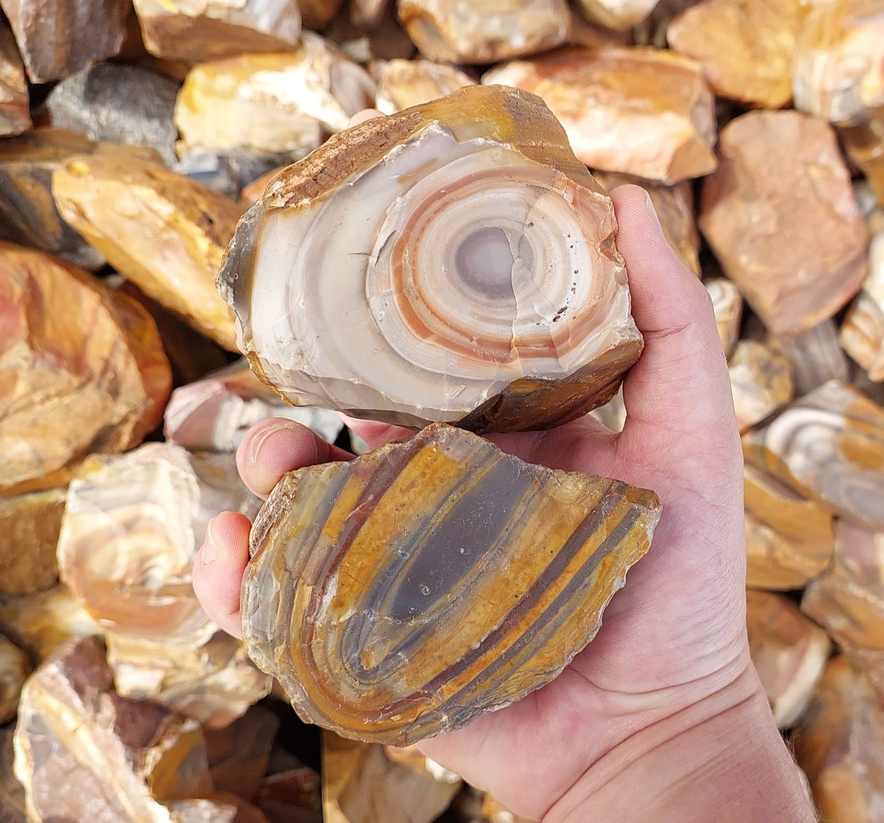
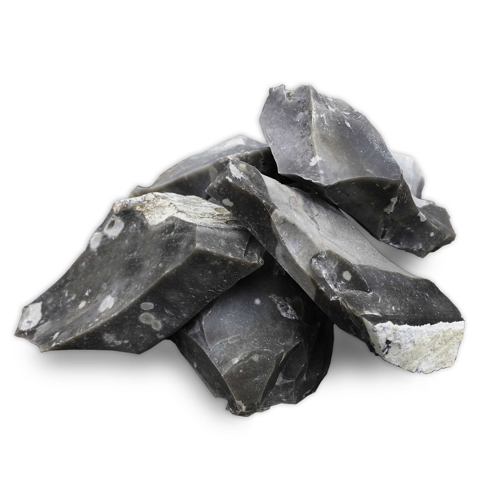
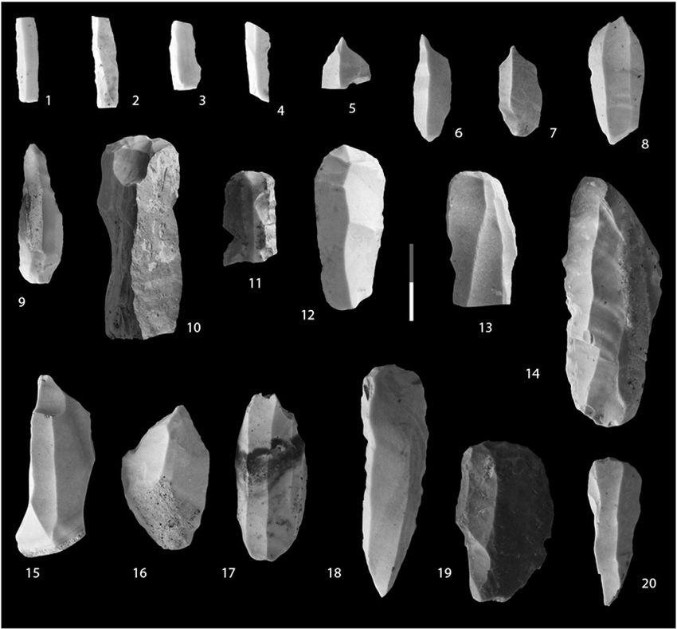

Chert: The Cryptocrystalline Sedimentary Rock
Chemical Formula: SiO₂ (Silicon Dioxide)
Color: Typically gray, brown, red, black, white, green
Hardness: 6.5-7 on the Mohs scale
Crystal System: Cryptocrystalline
Localities: United States, United Kingdom, Brazil, Germany, France, India
Common Uses: Tools (historically), Decorative Stone, Jewelry, Construction Aggregate, Ceramics
Introduction to Chert
Chert is a hard, fine-grained sedimentary rock composed primarily of microcrystalline or cryptocrystalline quartz, meaning its quartz crystals are too small to be seen without magnification. It often forms in nodules or beds within limestone or dolomite and is recognized for its glassy appearance and conchoidal fracture, which results in sharp edges when broken.
Throughout history, chert has played a vital role in human development, particularly during the Stone Age, when it was widely used for making tools and weapons. Its exceptional hardness made it ideal for fashioning arrowheads, scrapers, and knives. Even today, chert is valued in various industries for its durability and range of colors, which include gray, brown, red, black, and green.
Formation and Types of Chert
Chert forms primarily in marine environments, often from the remains of siliceous organisms such as radiolarians and diatoms. These microscopic organisms' silica skeletons accumulate on the ocean floor, eventually becoming buried, compacted, and chemically altered into chert. It can also form from the replacement of limestone by silica in a process called silicification.
Key Types of Chert:
1. Nodular Chert
Nodular chert forms as isolated nodules or concretions within limestone or dolomite. These nodules are typically spherical or irregularly shaped and are often found in layers of sedimentary rock. The formation of nodular chert is associated with the replacement of calcium carbonate with silica during diagenesis.
2. Bedded Chert
Bedded chert forms as continuous layers or beds of rock, typically in association with deep-sea sediments like radiolarian ooze or shale. Bedded chert is often found in regions that were once part of ancient deep oceans, such as the Franciscan Formation in California. These layers can be several meters thick and extend over large areas.
3. Flint
A well-known variety of chert, flint is typically darker in color with hues ranging from black to dark gray. Flint often occurs as nodules within chalk or limestone formations. Historically, flint was highly prized for making sharp tools and weapons because of its excellent fracture properties.
4. Jasper

Jasper is a form of red, yellow, or brown chert, colored by iron oxide impurities. It has been used for decorative purposes throughout history, particularly in jewelry and ornamental carvings. Jasper is known for its smooth surface and vibrant colors, often displaying unique patterns.
Structure and Properties of Chert
Chert's physical and mineralogical properties make it distinct among sedimentary rocks:
- Cryptocrystalline Structure: Chert’s microcrystalline structure means that its quartz crystals are too small to be distinguished without the aid of a microscope. This structure gives chert its characteristic hardness and smooth fracture.
- Hardness: With a hardness of 6.5-7 on the Mohs scale, chert is highly resistant to scratching and abrasion. This hardness made it invaluable in prehistoric tool-making and makes it durable in modern industrial applications.
- Fracture and Luster: Chert fractures conchoidally, similar to glass, resulting in sharp, jagged edges. This feature, combined with its vitreous to waxy luster, makes chert visually distinctive. The sharpness of these fractures made chert particularly useful in the creation of stone tools.
- Porosity: Chert is a non-porous rock, meaning it does not absorb water or other fluids. This makes it resistant to weathering and ideal for outdoor applications, including construction and aggregate use.
Uses of Chert
Throughout human history, chert has been valued for its durability and workability. Today, it continues to have a variety of uses:
1. Tool Making
Chert was one of the most important materials for early human tool-making, dating back to the Paleolithic era. Its hardness and ability to fracture into sharp edges made it ideal for creating arrowheads, knives, scrapers, and other cutting tools. Some of the most famous examples of chert tools are the Clovis points used by early inhabitants of North America.
2. Decorative Stone
Chert’s variety of colors and patterns make it suitable for jewelry and ornamental stone. Red jasper, in particular, is prized for its rich hues and has been used in carvings, beads, and inlays for centuries. In some cases, polished chert is used in decorative objects such as bowls and sculptures.
3. Construction and Aggregate
Crushed chert is commonly used as aggregate in the construction industry. Its hardness and resistance to weathering make it ideal for use in road building, concrete production, and as a fill material in civil engineering projects. Chert aggregate provides strength and durability to concrete and asphalt mixtures.
4. Ceramics and Abrasives
Chert's hardness and non-porous nature make it useful in the ceramics and abrasive industries. It can be ground down to create fine powders used in the production of high-quality ceramics or as an abrasive in polishing and sanding applications.
History of Chert
Chert has been used by humans for thousands of years, making it one of the earliest known materials for tool-making and construction.
Stone Age and Prehistoric Uses
During the Stone Age, chert was a critical resource for early humans. Its ability to fracture into sharp edges allowed for the creation of a wide variety of tools. Flint knapping, the process of shaping chert into tools, was a skill passed down through generations. Prehistoric societies across Europe, Asia, and North America relied heavily on chert for both hunting and daily tasks.
Ancient Egypt and Mesopotamia
Chert was used extensively in Ancient Egypt, particularly in the creation of weapons, tools, and ceremonial objects. Egyptian craftsmen used chert for carving intricate details into stone, producing knives, daggers, and chisels. Similarly, in Mesopotamia, chert was used in construction and for the production of arrowheads and other tools.
Modern Times
In modern times, chert continues to be used in various industries. Its resistance to weathering and chemical erosion makes it valuable in construction and civil engineering. Chert nodules are often sought after by collectors and enthusiasts for their historical significance and aesthetic appeal.
Famous Varieties of Chert
Several varieties of chert are notable for their beauty, historical significance, or unique formation processes:
1. Flint
One of the best-known varieties of chert, flint is a dark-colored form of chert found in chalk or limestone formations. It was extensively used in the Stone Age for tool-making and later in flintlock firearms. Famous flint deposits include the White Cliffs of Dover in England.
2. Jasper
Jasper is a colorful variety of chert, often used for jewelry and ornamental objects. It is distinguished by its red, yellow, or brown coloration, caused by iron oxide impurities. Deposits of jasper can be found in many regions, including Brazil, India, and the United States.
3. Novaculite

Novaculite is a form of microcrystalline quartz similar to chert but with an exceptionally fine grain. It is often used as a sharpening stone due to its hardness. Arkansas novaculite is one of the most famous varieties and has been used for centuries as a whetstone.
4. Radiolarian Chert

Radiolarian chert forms from the silica-rich skeletons of radiolarians, a type of microscopic plankton. These cherts often have a reddish or dark color and are found in deep-sea environments. Famous radiolarian chert deposits are found in the Franciscan Complex of California.
Quarrying and Sourcing of Chert
Chert is sourced from sedimentary formations around the world, often found as nodules within limestone or dolomite beds. Large deposits are found in marine environments where silica from the remains of organisms like diatoms and radiolarians accumulates over time.
Notable Quarry Locations:
- United States: Chert is quarried across the U.S., with significant deposits in Missouri, Texas, and California.
- England: The White Cliffs of Dover are home to extensive flint deposits, which were historically important for tool-making.
- Brazil: Jasper and other decorative varieties of chert are mined in Brazil, known for producing some of the world’s finest ornamental stones.
Extraction Process
Chert is usually extracted by mining sedimentary layers where nodules or beds of chert are present. For industrial applications, chert is typically crushed and processed for use as aggregate or in ceramics. Decorative varieties like jasper are often polished and cut for use in jewelry and ornamental objects.
Enhancement of Chert
Though chert is naturally durable and beautiful, some treatments enhance its appearance for decorative uses:
- Polishing: Decorative chert, including flint and jasper, is often polished to enhance its natural color and luster. Polished chert is used in jewelry, sculptures, and other decorative objects.
- Carving: Jasper and other colorful cherts can be carved into intricate shapes for use in jewelry and ornaments. Artisans often choose pieces with unique patterns or inclusions for artistic value.
Caring for Chert
Chert requires minimal care due to its hardness and resistance to weathering:
- Cleaning: Chert can be cleaned with a mild soap and water solution. For decorative or polished chert, use a soft cloth to maintain its luster.
- Avoiding Damage: Despite its hardness, chert can chip or fracture if dropped or subjected to heavy impact, particularly polished or carved pieces. Handle it with care to avoid damage.
- Sealing: Polished chert used in jewelry or outdoor applications may benefit from a sealant to enhance its durability and protect against environmental factors.
Environmental Considerations
Like other natural stones, the quarrying of chert can impact the environment. Sustainable quarrying practices, such as land reclamation and reducing waste, are becoming more common. The durability of chert also makes it an environmentally friendly choice for long-lasting construction projects.
Conclusion
Chert’s historical significance, durability, and range of colors make it a versatile material used in tools, construction, and decorative arts. Its importance in prehistoric tool-making and its continued use in modern applications highlight chert’s enduring value.
See Also
- Flint
- Jasper
- Quartzite